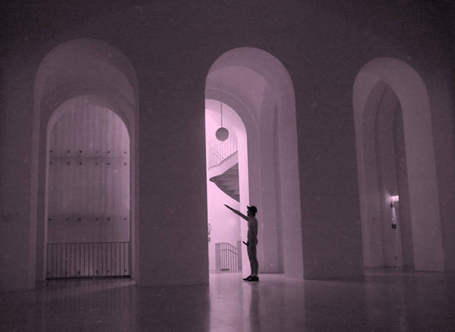
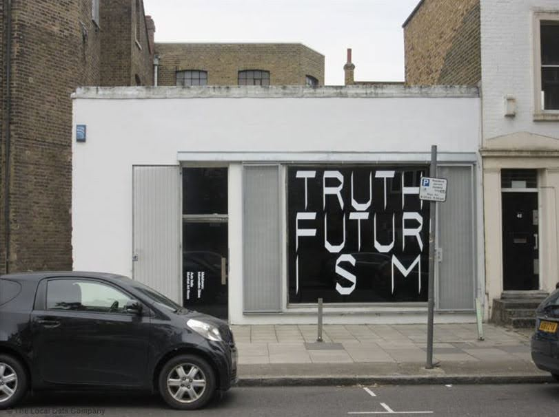
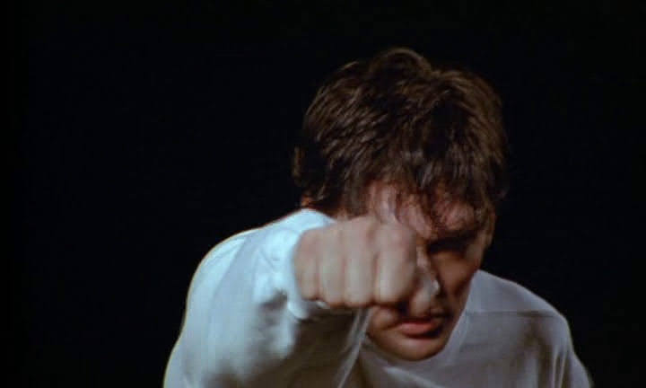
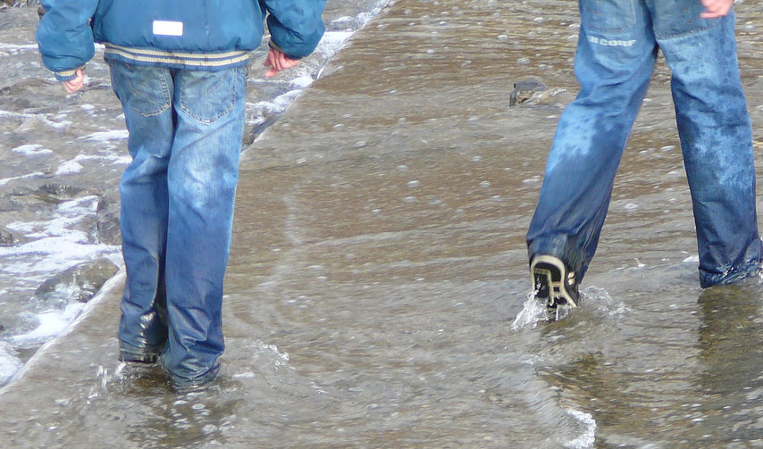
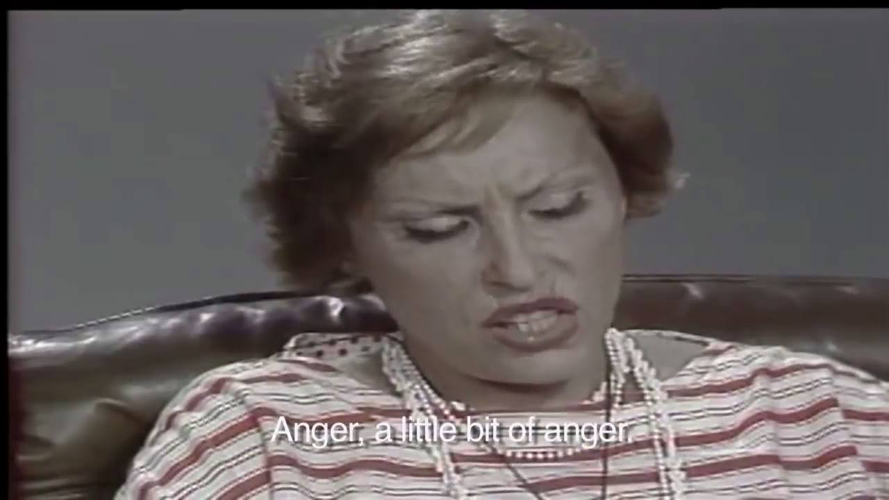
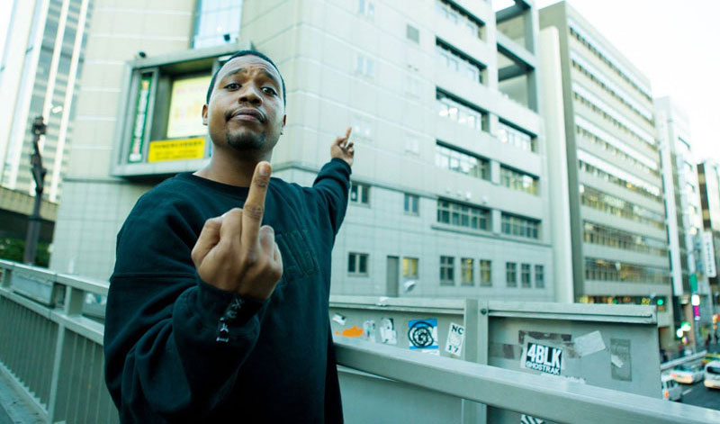

-
Big Youth - Miss Lou Ring A Ding
Bush Chemists - Light Up Your Spliff
Delia Derbyshire & Barry Bermange - Falling

-
Rex Ilusivii - Alisa
Hikaru Meets Kenichi Yanai - Under The Daylight
doon kanda - Crinoline
Garden Of Eden - Garden Of Eden (The Himalayan Mix)
Delroy Edwards - Love Is In The Air
R.E. - Let's Hold On (To the Love)
Jamal Moss - Ginger Snaps Pt.1
Michael Ozone's Liital Rhythm - Aby Ngana Diop
Essendon Airport - I Feel A Song Coming On
Señora - Paul
The Burning Spear - This Population
Mappa Mundi - Urbi Et Orbi
Peggy Gou - It Makes You Forget (Itgehane)
1 800 Girls - U, Me and Madonna
David Last - Physical Value System
A.r.t Wilson - Rebecca's Theme (Water)
Laraaji - This Is Where
Witch - Let's Get Together
Nightfall In Camp - Cada Día
Biff Bang Pow - Death of England
-
Hermine - Happy Holidays
Hidden Agenda - Pressin On
Rexy - Running Out Of Time
Eric Random - Subliminal
Solid Space - A Darkness in My Soul
A.C. Marias - Just Talk
Boards of Canada - Hi Scores
Brenda Ray - Another Dream
Andrea Daltro - Kiua
Quando Quango - Genius
Peter King - One Shot Of Vodka
Jah Shaka - Black Steel
The Fall - Your Heart Out
Pure Essence - Wake Up
P!OFF? - In Der Nacht
Jimothy Lacoste - Getting Busy!
Pitch - What Am I Gonna Do For Fun
Simple Minds - Theme For Great Cities
Truth - The Start
Bicep - Kites
-
Tradition - Rocket Repairs
Bullion - What Does She Know
Mac Gregor - Nan Ye Li Kan
Autechre - Bike
Suttee - Blue Rose
A.R. Kane - Suicide Kiss
Reel By Real - Untitled 2
Jack J - Atmosphere
Denis Mpunga & Paul K. - Veronika
Codek - Tam Tam
Pod - Northern Lights
Groovestyle - Love
Malör - Bali
Giovanni Cristiani - Dancing For Diletta
Deux Filles - The Letter
Steve Davis - Lalune Blanche
Système - Système
Christophe Laurent - Nuit Brésiliennes
Clara Mondshine - Die Drachentrommler
Victor Romeo - Mellow Magic
- Underground Resistance - Something Happened On Dollis Hill
- Gallifre Feat. Jimmie Lee - Set Your Mind It
- Model 500 - I Wanna Be There
- John Cooper Clarke - Midnight Shift
- Morrissey - Spent The Day In Bed
- King Kong - No Mix Up
- Steve Monite - Only You
- Sylford Walker - Burn Babylon
- Billy MacKenzie - Colours Will Come (US 60659 Mix)
- Shinichiro Yokota-Sora - Sky Magic
- Ariel Pink - Feels Like Heaven
- N.Y. House'n Authority - Apt 3b
- Deniz Kurtel - The Fifth House
- Eddie C - Take Me Or Leave Me
- Surface - Falling In Love
- Orange Juice - A Place In My Life
- Jackson Jones - I Feel Good, Put Your Pants On
- Jacob Desvarieux - Sweet Florence
- The Necessaries - Driving and Talking at the Same Time
- Aron McFaul - Jam In Circles
- Idjut Boys - Another Bird
- The Lo Yo Yo - Cog
- Black Uhuru - Natural Reggae Beat
- Superstar - Spirit World
- Maya - Lait De Coco (Dub)
- Oluko Imo - Praise-Jah
- Son Of Sam - Not A Second Wasted
- Zenit - Waitin'
- Current Obsessions - Faceless Rite
- Kevin Harrison - All Night Long
- Furniture - Why Are We In Love
- Kenny Duo - Jungle In Old Town
- Din A Testbild - Tight Pants
- Billy Boyo - One Spliff A Day
- Hans Joachim Roedelius - Johanneslust
- Mogwaa - Déjà Vu (D.K 's Trouble Town Dub)
- L B Bad - The New Age Of Faith
- Carl Craig - A Wonderful Life (Original Mix)
- Jaquarius - Love Is Happiness (Acid Love)
- Jackie Mittoo - Ayatollah

- ishi vu - vad ska det bli av mig?
- serpentwithfeet - four ethers
- Sandii - Zoot Kook
- Pete Brandt's Method - What You Are
- Susan Cadogan - Nice and Easy
- Dread & Fred - Zulu Skank
- Experience - Share It With You
- Rhythm Overload – Strikes Back!
- Kasra V - Myth (Dream 2 Science Remix)
- McCarthy - I'm Not A Patriot But (Peel Session)
- Duran Duran - Vertigo 'Do The Demolition' (Mantronix Mix)
- Yumi Murata - Face to Face
- Pablo Gad - Oh Jah
- Os Mulheres Negras - Mãoscolorida
- Sigurd Cochius - Indianenmars
- Jay Daniel - Paradise Valley
- D-Day - Dust
- Roberto Musci & Giovanni Venosta - Nexus On The Beach
- Shackleton & Vengeance Tenfold - Dive Into The Grave
- Wilfred Percussion - Uri

- Electric Party - Tension
- Lost Gringos - Tambo Machay
- Atsuo Fujimoto's Beat Jazz - Strangers In Island
- VO - Mashisa (Dub Mix)
- David Sylvian & Ryuichi Sakamoto - Bamboo Houses
- Aberdeen - Byron
- Steven Julien - Jedi
- The Blaze - Virile
- Gary Burton - Open Your Eyes You Can Fly
- Daevid Allen - Wise Man In Your Heart
- Micachu ft. KEVIN - Clothes Wear Me
- Ralph Lundsten - Horrorscope
- Machines At Last - The Colony
- Aksak Maboul - Saure Gurke
- Mr. & Mrs. Dale - It's You (New York - London Mix)
- LNS - R'lyeh (E-GZR Mix)
- Fingers Inc. - Feelin' Sleazy
- Franco Del Moro - Elisan's Song
- Wha-ha-ha - Kohmori
- Mockba Music - Exil

- Cluster - Rosa
- Suzanne Kraft - Dead Ringer
- Wizkid - Ojuelegba
- Section 25 - Looking From A Hilltop (Megamix)
- Autechre - Cavity Job
- Ryuichi Sakamoto - Plastic Bamboo
- Lifetones - Good Side
- Joel Vandroogenbroeck - New Wave Rock
- Hiroshi Fujiwara - Natural Born Dub
- Terence Trent D'Arby - Sign Your Name (Lee "Scratch" Perry Remix)
- A Guy Called Gerald - Emotions Electric
- Chakachas - Stories
- Finis Africae - Suite Amazónica
- Carlos Maria Trindade - The Truth
- Urban Sax - Part 3
- Andy Stott - Butterflies
- Rezzett - Zik Zak
- The African Dream - Makin A Living
- Menta - Snake Charmer
- Julien Jabre - Swimming Places (No Beatz)

- Louis Philippe - If You're Missing Someone
- Normil Hawaiians - Yellow Rain
- Durutti Column - Never Known
- C'est Fab - Nancy Sesay And The Melodaires
- The Wake - Something Outside
- Disco Inferno - From the Devil to the Deep Blue Sky
- Sudden Sway - '76 Kids Forever
- Avocados - I Never Knew
- Weather Prophets - Almost Prayed
- Fatal Microbes - Violence Grows
- Steel Leg - Unlikely Pub
- The Sugargliders - Beloved
- The Orchids - Women Priests And Addicts
- It's Immaterial - Heaven Knows
- Saâda Bonaire - You Could Be More As You Are
- Virna Lindt - I Experienced Love
- The Passions - I'm in Love with a German Film Star
- Kalima - Sad And Blue
- The Siddeleys - My Favourite Wet Wednesday Afternoon
- David Bowie - Some Are

- Kuniyuki - Earth Beats (Fingers Ambient Mix)
- Strict Face - Alice (Peace Edit)
- Babyfather - Meditation
- Forgemasters - Stress
- Tony G - Tonys Song
- Florist - Marine Drive
- Skream - Midnight Request Line
- Father - Cheap Thrills
- Rockers Hi-Fi - Push Push
- B-Cause - The Jump Street Man
- The Barmy Army - Sharp As A Needle
- Special Request - Amnesia (Radio Edit)
- People In Control - When It's War
- Precious - Definition Of A Track
- Arca - Front Load
- Spring Heel Jack - The Sea Lettuce (Pt 1)
- Jovonn - Pianos Of Gold
- Paradox - Nostalgia
- Expansives - Life with you
- Zomby X Rezzett - SDYF
- Band Aid - A Tour In Italy
- Aztec Camera - Pillar to Post
- Malcolm McLaren - Madam Butterfly (On The Fly Mix)
- Floating Points - Nespole
- Konk - Blast (Percussion Jam)
- T-Coy - Night Train
- Wareika Hill Sounds - Reggae Land Dub
- Placid Angles - Ocean (London Mix)
- Don Carlos - Alone (Paradise)
- Unique 3 - Rhythm Takes Control
- Carmody - Vulcani
- Pacific - Barnoon Hill
- Mr Monday - Daybreak
- The Gist - Yanks
- ZAP POW! - Sunshine People Dub
- Maria Medalha - Arrependimento
- Everything But The Girl - Each & Everyone
- Yasuaki Shimizu - Semitori No Hi
- The Flying Lizards - Her Story
- Scientist - Beaming

- Piano Fantasia - Song for Denise (Audiophile Dance Mix)
- Mariah - 花が咲いたら
- Clout - Sunshine Baby
- Willie Burns - Single Life
- Always - The Flying Display
- The Murphy Federation - The Fed Up Skank
- Brother Resistance - Star Warz Rapso
- Critical Rhythm - Eastern Breeze (Authentic Mix)
- Alexander Robotnick - Problèmes D'Amour (Dub Version)
- Quando Quango - Happy Boy
- Vivien Goldman - Launderette
- Officer! - Telepathy
- Actress - Hazyville
- Happy Mondays - The Egg
- Max Berlin - Elle Et Moi
- Jah Wobble, Jaki Liebezeit, Holger Czukay - How Much Are They?
- Mavis John - Use My Body
- Loose Joints - Is It All Over My Face (Unreleased Single Female Vocal Version)
- Double - Woman Of The World (Long Instrumental Version)
- Sheer Taft - Too Much Pressure